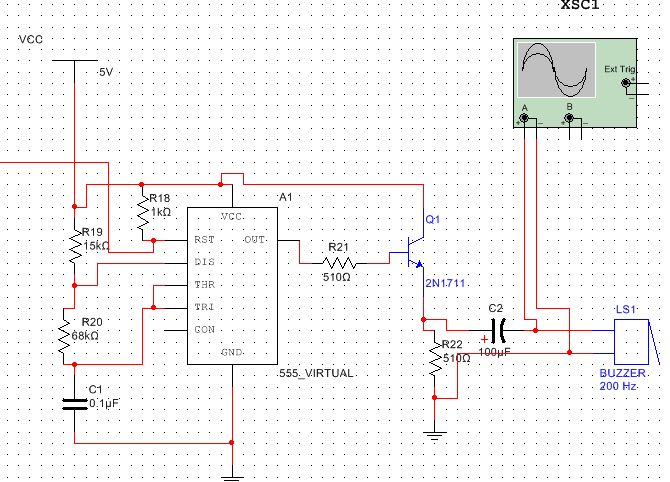

Multi-way answerer design & Radio circuit design
(1) The multi-channel answerer circuit can be used by 8 contestants;
(2) Each contestant has an answer button. After the host clears the button with the button and sends out the answer command, the answer is executed;/p>
(3) The circuit is equipped with an LED digital display, which can display the number of the contestant with priority; at the same time, it is equipped with a voice prompt circuit; the digital display and voice prompt can be cancelled by the host with the clear button;
(4) After one of the contestants is successful, the other contestants will be invalid.
Overall simulation diagram
Encoding circuit

Truth table
Flip-flop circuit
Decoder circuit
Alarm circuit
Radio circuit design
The first step is to count the materials and remember the name and shape of each material. The second step is the understanding of diodes, capacitors, and resistors. Distinguish the polarity of the diode and the polarity of the electrolytic capacitor. The third step: preparation work before welding, component reading measurement, deoxidation, component bending, component insertion, component welding. The rule of color circle recognition: gold and silver can only be multipliers and allowable errors, and must be placed on the right. The color circle indicating the allowable error is slightly wider than other color circles, and slightly farther away from other color circles. Most of the resistors we use have an allowable error of ±5%, which is represented by the gold color ring, so the gold is generally on the far right. Remove the oxide layer on the surface of the component: hold the resistor or the body of other components with your left hand, scrape the surface of the component foot with your right hand with a saw blade, and slowly turn with your left hand until the surface oxide layer is completely removed. This item is omitted for new components. Step 4: Welding and installation of components Step 5: Debugging of the radio 5.1 Full IF frequency Low end: select a radio station in the range of 550-700KHz. For example, the Central People's Broadcasting Station 640KHz, refer to the position of the tuner dial pointer at 640KHz, adjust the magnetic core of the oscillating coil B2 (red), and then receive this station and tune it to a louder voice. In this way, the receiving frequency when the total precession capacity of the duplex is at its maximum is around 525-530KHz. The low end scale is aligned. (2) High-end tuning: select a broadcasting station with a known frequency in the range of 1400-1600KHz, for example 1500KHz, and then point the pointer of the tuning dial to the 1500KHz position of the circumstance board scale, and adjust the fine-tuning at the top left corner of the duplex in the oscillation circuit. The capacitance makes this radio station the loudest in this position. 5.3 Unification Using the radio station received at the lowest end, adjust the position of the antenna coil on the magnetic rod to make the sound the loudest, so as to achieve the low-end unified tuning. Use the highest-end radio station to adjust the fine-tuning capacitor in the antenna input loop to make the sound the loudest, so as to achieve high-end unified tuning. In order to check whether the overall adjustment is good, you can use the inductance test rod (copper-iron rod) to identify